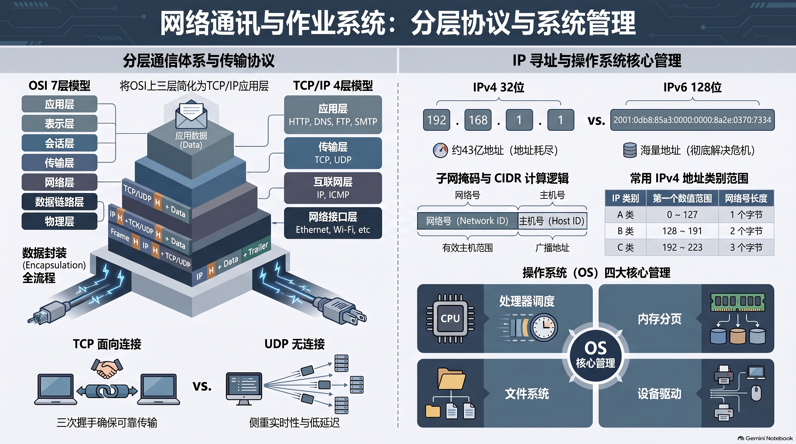

📊 本章全景思维导图与核心考点信息图
本图整合了董总《高中资讯科技（第二册）》第 3 章全部核心脉络，涵盖 OSI 7 层与 TCP/IP 协议映射、IPv4 分类与子网计算、DNS 解析流程、核心网络硬件与 NOS 域控架构，点击可全屏高清放大复习。


🎯 本章学习目标与核心考点清单
适用对象：马来西亚华文独立中学（董总新课标）高一/高二师生
教材基准：董总教科书《高中资讯科技（第二册）》（2024 年版）第 3 章“网络通讯与作业系统”与官方参考答案
核心素养：分层体系解耦思维、IP网络寻址规划能力、网络互联协议选型与系统级安全防御意识

🖼️ 【全景幻灯 01 导读】全章知识架构与核心素养：全景导航 3.1 协议模型与寻址体系、3.2 连接设备与网络操作系统两大核心板块。
1.1 核心考查三维目标
- 识记（Knowing）：熟记 OSI 七层模型与 TCP/IP 四层模型的层次映射关系；掌握 IPv4 地址 A、B、C 类首字节数值范围（0~127, 128~191, 192~223）及各自私有地址范围；识记 MAC 物理地址（48位十六进制）与 IP 逻辑地址（32位点分十进制）的物理差异；掌握交换机（Layer 2）与路由器（Layer 3）的工作层级与转发依据。
- 理解（Understanding）：透彻理解为何在拥有 IP 地址的同时必须依赖 DNS 域名系统；领会 TCP 三次握手与 UDP 无连接特性的业务适配逻辑；掌握有线网络依赖物理管控而无线网络必须依赖逻辑加密（WPA3/MAC白名单）的深层机理。
- 计算与应用（Synthesizing）：能根据给定的主机 IP 地址精准判定其所属类别（公有/私有、A/B/C 类）；能熟练计算默认子网掩码与网络号；能为特定网络场景（如多校区互联、企业跨国音视频、微型工作室）选配最优网络设备与协议组合。
1.2 核心考点通关背诵清单 (Checklist)
提示：点击每项考点左侧复选框，可标记自己的第一轮通关复习进度：
🌐 二、 OSI 7层 vs TCP/IP 协议模型
为了消除不同厂商硬件与软件之间的壁垒，国际标准化组织（ISO）提出了 **OSI 七层参考模型**，而现实互联网通信则以简洁实用的 **TCP/IP 四层模型** 为核心支柱：

🖼️ 【全景幻灯 02 导读】OSI 7 层参考模型 vs TCP/IP 4 层模型对照：分层解耦理念、OSI 7层与 TCP/IP 工业模型映射关系及数据封装拆封微观机制。
OSI 七层参考模型 TCP/IP 四层工业模型 典型协议与传输单元 (PDU)
┌──────────────────────┐ ┌─────────────────────┐ ┌────────────────────────┐
│ 7. 应用层 Application│ │ │ │ HTTP, HTTPS, FTP, DNS │
├──────────────────────┤ │ 4. 应用层 │ │ SMTP, POP3, DHCP │
│ 6. 表示层 Present. │ ──────────► │ Application │ │ (数据报文 Message/Data) │
├──────────────────────┤ │ │ │ │
│ 5. 会话层 Session │ │ │ │ SSL/TLS 会话维持 │
├──────────────────────┼─────────────┼─────────────────────┼───────┼────────────────────────┤
│ 4. 传输层 Transport │ ──────────► │ 3. 传输层 Transport │ │ TCP (段 Segment) │
│ │ │ │ │ UDP (数据报 Datagram) │
├──────────────────────┼─────────────┼─────────────────────┼───────┼────────────────────────┤
│ 3. 网络层 Network │ ──────────► │ 2. 网际层 Internet │ │ IP, ICMP, ARP │
│ │ │ │ │ (数据包 Packet) │
├──────────────────────┼─────────────┼─────────────────────┼───────┼────────────────────────┤
│ 2. 数据链路 DataLink │ ──────────► │ 1. 网络接口层 │ │ 以太网协议 (帧 Frame) │
├──────────────────────┤ │ Network Interface│ ├────────────────────────┤
│ 1. 物理层 Physical │ ──────────► │ (Link Layer) │ │ 电压脉冲, 光脉冲 (比特 Bit)
└──────────────────────┘ └─────────────────────┘ └────────────────────────┘
| 传输微观动作 | 处理流向 | 协议数据单元处理机制 | 形象类比 |
|---|---|---|---|
| 发送端封装 (Encapsulation) | 自顶向下 (应用层 → 物理层) |
数据每穿过一层，都在其头部打上该层专属的协议报头（Header）：应用数据 → 传输层加端口号形成段 → 网络层加源/目的IP形成包 → 数据链路层加源/目的MAC与校验码FCS形成帧 → 物理层转为比特流发送。 | 寄快递：写信纸内容 → 装入内信封贴单号 → 塞入气泡袋防震 → 打包装入纸箱贴收发地址条形码。 |
| 接收端解封 (Decapsulation) | 自底向上 (物理层 → 应用层) |
网卡接收比特流还原为帧，校验正确后逐层剥除各层协议报头，最终还原出纯净的应用层文本或多媒体数据交付给接收进程。 | 收快递：撕开外纸箱胶带 → 拆掉气泡袋 → 撕开内信封取出信纸阅读。 |
🔢 三、 IPv4 编址分类与 IPv6 革命

🖼️ 【全景幻灯 03 导读】IPv4 地址分类、子网掩码与私有地址范围：32位点分十进制结构、A/B/C 类地址划分、私网 IP 范围与子网掩码提取网络号实战。
(1) IPv4 地址分类体系 (统考高频计算)
IPv4 地址由 32 位二进制数（4 个字节） 组成，通常写为点分十进制形式（如 192.168.0.100）。地址划分为两部分：网络号（Network ID）与主机号（Host ID）。
| 地址类别 | 首字节十进制范围 | 默认子网掩码 | 网络号 / 主机号位数 | 每个网络最大主机数 | 典型应用场景 |
|---|---|---|---|---|---|
| A 类 | `0 ~ 127` | `255.0.0.0` (/8) | 前 8 位网络号，后 24 位主机号 | 2²⁴ - 2 = 16,777,214 台 | 跨国超大型国家级网络骨干 |
| B 类 | `128 ~ 191` | `255.255.0.0` (/16) | 前 16 位网络号，后 16 位主机号 | 2¹⁶ - 2 = 65,534 台 | 大型企业、独中校园网与高等学府 |
| C 类 | `192 ~ 223` | `255.255.255.0` (/24) | 前 24 位网络号，后 8 位主机号 | 2⁸ - 2 = 254 台 | 小型办公室与家庭局域网 |
| D 类 | `224 ~ 239` | 无子网掩码 | 前 4 位固定为 1110 | 组播 / 多播地址 (Multicast) | 视频会议、多路并发串流直播 |
| E 类 | `240 ~ 255` | 无子网掩码 | 前 4 位固定为 1111 | 科学实验与未来预留 | 科研机构，未公开商用 |
🎯 考题秒杀核心技巧：三大私有保留 IP 网段
为了缓解全局公有 IP 地址匮乏，国际组织预留了三段专用内部 IP 地址，严禁直接在公共互联网上被路由：
- A 类私有地址：
10.0.0.0至10.255.255.255(共 1 个完整 A 类网段) - B 类私有地址：
172.16.0.0至172.31.255.255(共 16 个 B 类网段) - C 类私有地址：
192.168.0.0至192.168.255.255(共 256 个 C 类网段)
(2) NAT 技术与 IPv6 革命

🖼️ 【全景幻灯 04 导读】IPv6 革命：128位海量地址与协议优化：冒号十六进制表示、前导零压缩规则、内置 IPSec 安全机制与彻底终结地址枯竭危机。
- 网络地址转换 (NAT, Network Address Translation)：允许多台内网私有 IP 设备（如全校数百台电脑）共用少量公有合法 IP 访问外网，路由器在网关处执行源 IP 与端口动态重写映射，成为缓解 IPv4 枯竭的救命稻草。
- IPv6 革命：采用 128 位二进制数（16 个字节），采用冒号十六进制表示法（如
2001:0db8:85a3::8a2e:0370:7334），提供多达 $2^{128}$ 个天文数字级的海量地址空间（号称“能为全球每粒沙子分配一个IP”），彻底终结枯竭危机，原生内置 IPSec 加密与自动无状态配置。
⚡ 四、 DNS解析与传输协议 (TCP/UDP)
(1) 域名系统 (DNS) 解析流程

🖼️ 【全景幻灯 05 导读】域名系统 (DNS) 递归与迭代解析全流程：根域名服务器、顶级域 (TLD) 与权威域名服务器多级协同解析流程与本地 DNS 缓存。
为什么有了 IP 地址还要使用域名？ 计算机只认数字 IP 地址，但阿拉伯数字对人类记忆极度不友好且无语义；域名（如 dongzong.my）具备鲜明的可读性与品牌价值。DNS 充当了整个互联网的“全球电话簿”，负责将域名翻译为真实 IP 地址。
[用户发起] ──► 1. 查本地浏览器缓存与操作系统 Hosts 文件 ──► (命中直接建立TCP)
│
▼ (未命中)
[本地递归 DNS 伺服器 (ISP / 8.8.8.8)]
│
├──► 2. 查询【根域名服务器 Root (.)】 ────────► 返回 .my 顶级域服务器 IP
│
├──► 3. 查询【顶级域名服务器 TLD (.my)】 ─────► 返回 dongzong.my 权威服务器 IP
│
└──► 4. 查询【权威域名服务器 Authoritative】 ──► 返回 www.dongzong.my 的真实公网 IP
│
▼
[本地 DNS 缓存结果并返回给用户浏览器发起 Web 连接]
(2) 传输层双雄深度决战：TCP vs UDP

🖼️ 【全景幻灯 06 导读】传输层双雄：TCP 可靠连接 vs UDP 极速传输：三次握手建立连接、序列号确认与重传机制 vs 头部轻量无握手低延迟语音视频流。
| 特性对比 | TCP (传输控制协议) | UDP (用户数据报协议) |
|---|---|---|
| 连接模式 | 面向连接 (Connection-Oriented) 通信前必须执行严格的“三次握手”建立连接。 |
无连接 (Connectionless) 不握手直接发包，随发随走。 |
| 可靠性 | 极高可靠 序列号确认（ACK）、超时重传、流量滑动窗口、拥塞控制。 |
不可靠（尽最大努力交付） 不保证按序到达，丢失不重传，不保送达。 |
| 报头开销与延迟 | 报头至少 20 字节，控制复杂，传输时延较高。 | 报头仅固定 8 字节，超轻量级，传输零排队延迟。 |
| 适用业务场景 | 对数据准确性 100% 严苛、绝不允许错位丢失的场景： 网页浏览 (HTTP/S)、文件上传下载 (FTP)、邮件收发 (SMTP)。 |
对实时性极度敏感、轻微丢包不影响全局体验的场景： 实时网络竞技对战游戏、VoIP 语音通话、在线视频直播、DNS 查询。 |
(3) 常见应用层核心协议全景矩阵

🖼️ 【全景幻灯 07 导读】应用层高频协议矩阵 (HTTP/S, FTP, SMTP, DHCP)：HTTP/HTTPS 端口 80/443 加密差异、文件传输、邮件发送与局域网 IP 自动租约下发。
| 协议名称 | 默认端口 | 底层传输协议 | 核心功能与安全特性 |
|---|---|---|---|
| HTTP | 80 | TCP | 超文本传输协议，用于客户端浏览器加载网页，明文传输无加密。 |
| HTTPS | 443 | TCP | 安全超文本传输协议，嵌入 SSL/TLS 加密层，防范窃听篡改与钓鱼。 |
| DHCP | 67 / 68 | UDP | 动态主机配置协议，为入网设备自动下发 IP、子网掩码、网关与 DNS。 |
| FTP | 20 / 21 | TCP | 文件传输协议，用于客户端与服务器之间双向批量传输大型数据文件。 |
| SMTP | 25 | TCP | 简单邮件传输协议，专用于在各邮件服务器之间推送和转发电子邮件。 |
🔌 五、 核心网络设备 (MAC/交换/路由)

🖼️ 【全景幻灯 08 导读】网络互联核心硬件：网卡、交换机与路由器：MAC 物理地址 (二层交换) 与 IP 逻辑地址寻址 (三层路由隔离广播风暴) 原理对比。
| 网络设备 | 工作 OSI 层级 | 核心转发依据 | 碰撞域隔离 | 广播域隔离 | 核心工程定位 |
|---|---|---|---|---|---|
| 集线器 (Hub) | 第 1 层 (物理层) | 无（盲目泛洪广播） | ❌ 共享单碰撞域 | ❌ 不隔离 | 早期淘汰设备，所有端口平分带宽，碰撞极其频繁。 |
| 交换机 (Switch) | 第 2 层 (数据链路层) | MAC 地址表（动态自主学习） | ✅ 隔离碰撞域（每端口独享全双工带宽） | ❌ 不隔离（转发广播包） | 局域网骨干中枢，极大提升局域网并发传输吞吐量。 |
| 路由器 (Router) | 第 3 层 (网络层) | IP 路由表（路由协议寻径） | ✅ 隔离碰撞域 | ✅ 隔离广播域（阻断广播风暴） | 连接不同子网与外网，负责跨地域数据报最佳路径转发。 |
💡 统考高频易错题点睛：MAC 地址与网卡数量
MAC 地址（媒体访问控制地址） 是全球唯一烧录在网卡芯片 ROM 中的 48 位（6 字节）十六进制数。若一台便携笔记本电脑同时具备有线以太网网卡与无线 Wi-Fi 网卡，该电脑将拥有 2 个不同的全球唯一 MAC 地址！
🛡️ 六、 网络作业系统 (NOS) 与安全防御
(1) 有线网络 vs 无线网络物理管控与安全深度对比

🖼️ 【全景幻灯 09 导读】有线网络 vs 无线网络安全防御深度对比：物理线缆接触限制防窃听 vs 无线电波开放外溢易被监听破解的攻防博弈。
| 网络形态 | 物理安全边界 | 主要安全优势 | 潜在安全威胁与管理短板 | 工程防御首要策略 |
|---|---|---|---|---|
| 有线局域网 (Wired LAN) | 具备明确物理边界 依托双绞线与光纤实体线缆。 |
无法隔空偷听，必须插网线；一旦发生入侵或违规，网管拔掉端口网线即可实施物理强制断网。 | 布线施工繁琐僵硬，插拔口需要物理门禁安全锁防范。 | 配线柜门禁管控、802.1X 端口准入认证。 |
| 无线局域网 (Wireless LAN) | 无物理实体边界 电磁波向空间球状发散，可穿墙透壁。 |
免除布线、终端移动极为敏捷灵活。 | 建筑外非法分子亦可隔空截获信号，易遭假冒 AP、字典破解弱密码、中间人窃听。 | WPA3 强加密认证 + 开启 MAC 地址白名单过滤 + 隐藏 SSID 广播。 |
(2) 网络操作系统 (NOS) 核心职能

🖼️ 【全景幻灯 10 导读】网络操作系统 (NOS) 集中域控与权限管理：Windows Server Active Directory 域控制器集中认证与 Linux 稳定权限管理全解。
- 集中式身份认证与活动目录（Active Directory 域控制器）：全公司/全校用户只需单一账号登录任意终端，统一管控文件读写与打印权限；
- 企业网络核心基础设施寄宿：稳定承载组织内部的 DNS、DHCP、Web 服务器以及网络防火墙安全模块；
- 集群资源高效调度与容灾：支持多台服务器负载均衡、磁盘阵列（RAID）热备与数据异地自动灾备。
(3) 前沿卫星宽带通信（如星链 Starlink）工程评估

🖼️ 【全景幻灯 11 导读】卫星宽带通信（星链）工程价值与局限：低轨卫星星座全覆盖优势 vs 恶劣雨雪衰减、高昂设备资费与视距无遮挡严格要求。
- 核心突出优势：彻底摆脱地面物理光缆与基站限制，实现全球偏远荒漠、远洋轮船、灾害孤岛的无缝高速联网；
- 主要技术短板与工程局限：初期地面终端与月费资费高昂；电磁波受暴风雨雪吸收发生雨衰（Rain Fade），天线必须放置在视距完全开阔无树木遮挡的屋顶。
⚠️ 统考易错避坑与答题模板

🖼️ 【全景幻灯 12 导读】全章知识体系图谱与统考大题标准答题卡：独中统考真题大题解题满分模板、全章思维导图与考前 3 分钟速记清单。
❌ 常见高频易错认知陷阱
- 陷阱 1：把
192.168.1.1判定为公网 IP。
👉 纠偏：192.168.x.x属于绝对标准的 C 类私有保留 IP，不能直接在公网被路由。 - 陷阱 2：误以为“交换机能够隔离广播域”。
👉 纠偏：交换机只能隔离碰撞域；唯有三层路由器才能阻断广播风暴、隔离广播域。 - 陷阱 3：误以为“TCP 和 UDP 可以互相替代”。
👉 纠偏：视频通话如果强用 TCP 会因为频繁超时重传引发灾难性持续雪崩延迟。
✅ 统考标准答题采分关键词
- 交换机寻址阐述：必答“基于二层数据链路层”、“动态学习端口与 MAC 地址对应表”、“硬件级端口转发”。
- 无线网络安全策略：必答“WPA3 强加密协议”、“启用 MAC 白名单过滤”、“隐藏 SSID 广播防嗅探”。
- DNS 作用阐述：必答“将直观可读的域名解析为机器识别的数字 IP 地址”。
严格对接董教总《高中资讯科技（第二册）》第3章课程标准与 2026/2027 统考新规范，收录 80 道全真单项选择题（每 10 题一组分页自测，即判即析并展示官方核心考点）以及 15 道情境综合作答题（包含独立小问卡片与官方评分量规）。